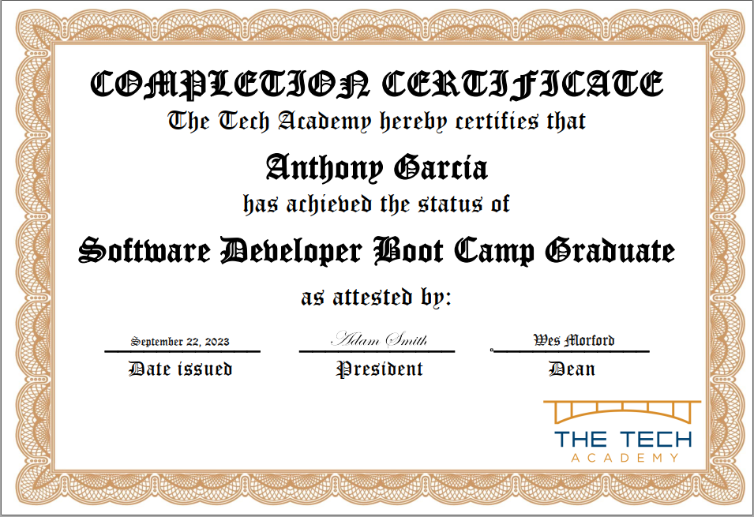

My coding journey began when I was about 12, when my computer science
teacher introduced me to
Scratch. I started developing simple games for my friends and I to play
together in class. As I took in their feedback and refined my games, I
discovered something about myself: I love to create things that other
people enjoy using.
As I got older, my love for computers continued to expand and I became
the unofficial "IT Support" for my family. Over time, I began to
realize that one of the biggest struggles (at least for my family
members), was simply navigating through a website. Layouts would be
confusing, links would be scattered throughout, and sometimes things
would not work as intended. With the rise of self-service technologies
and more responsibility left to the individual, I strive to create
software that is intuitive, aesthetically pleasing, and functional.
A few years ago, I began working for Ferguson Enterprises as a member
of their phone support team. I quickly worked my way up to the
Showroom Consultant position, and began working out of the
Portland showroom. This was a great job and could have even been my career, but I
wasn't fufilled with the work I was doing. It was then that I made one
of the hardest decisions of my life, and I quit my job to follow my
passion of becoming a software developer.

After quitting my job, I enrolled in
The Tech Academy's
Software Development bootcamp full-time. I completed the bootcamp and
graduated with honors, but my learning did not stop there. Since then,
I have continued to build on my skills using the wealth of knowledge
available online. If you'd like to see some of the projects I've
created, please check out
My Projects.